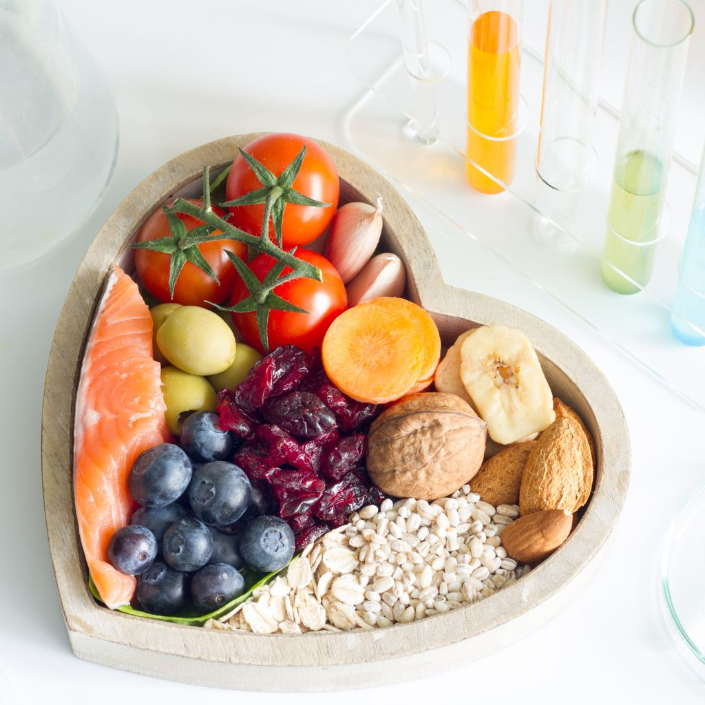
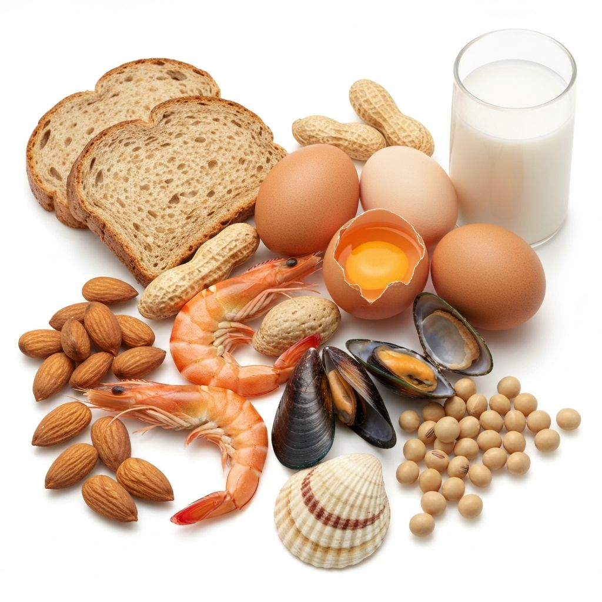

TasteBud helps you identify food triggers and avoid problem foods through data-driven insights. Take control of your digestive health.

More than 32 million Americans have food allergies, including 1 in 13 children. Many people suffer without knowing what's causing their symptoms.
Food allergies have increased by 50% in the last decade. The rise is especially notable in children and young adults.
Many allergy symptoms are subtle or delayed, making it nearly impossible to identify triggers without systematic tracking.
Related foods can trigger similar reactions. If you're allergic to shrimp, you might also react to crab or lobster.
Powerful tools designed to help you take control of your food sensitivities.
Snap a photo or search our extensive food database to log meals in seconds. Track symptoms and reactions with just a few taps.

Our algorithms analyze your food diary to identify patterns between what you eat and how you feel. Discover hidden triggers you never suspected.
Generate detailed reports to share with your healthcare provider. Get personalized recommendations based on your unique data.
Four simple steps to understanding your food sensitivities.
Snap photos or search our database to quickly log everything you eat and drink.
Record any symptoms you experience, from mild discomfort to severe reactions.
Our system analyzes your data to reveal connections between foods and symptoms.
Use insights to avoid triggers and share reports with your healthcare provider.
Take control of your health by identifying exactly which foods cause your symptoms. Stop the guesswork and start living symptom-free.
Protect your children by tracking their diet and reactions. Share detailed reports with pediatricians and allergists.
Recommend TasteBud to patients for better data collection. Receive comprehensive reports for more accurate diagnoses.
Interact with the app directly. Log meals, explore insights, and see how TasteBud helps identify food triggers.